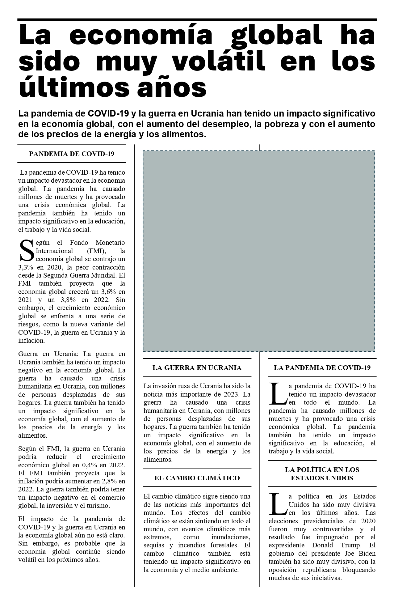

Caso: Artículo Periodístico (Clase)
Diseño multicolumna, configuración de página, letras capitales y formas con ajuste cuadrado
Replicar el formato y diseño de un artículo periodístico en Microsoft Word a partir de un texto base sin formato (plantilla), configurando el tamaño de página personalizado, márgenes estrechos de 1.0 cm, un diseño de tres columnas con línea divisoria, letras capitales de tres líneas, y una forma con ajuste de texto cuadrado para lograr una puntuación perfecta de 1000 puntos.
Material de Trabajo
Descarga la plantilla oficial en formato Word para iniciar el ejercicio:
Instrucciones Paso a Paso
Paso 1: Configuración de Tamaño de Página Oficio
Configura el tamaño de papel de la página a Oficio (Bolivia):
- Abre el documento de plantilla en Microsoft Word.
- Dirígete a la pestaña Disposición (o Formato en algunas versiones de Word).
- Haz clic en Tamaño y selecciona Más tamaños de papel... al final de la lista.
- En el panel de configuración de página, introduce las siguientes dimensiones:
- Ancho: 21,59 cm
- Alto: 33,02 cm (o 13 pulgadas).
- Haz clic en Aceptar para guardar la configuración.
Paso 2: Configuración de Márgenes
Configura los márgenes estrechos de página a exactamente 1.0 cm:
- En la pestaña Disposición, haz clic en Márgenes y selecciona Márgenes personalizados... al final.
- Configura los siguientes campos con el valor exacto:
- Superior: 1,0 cm
- Inferior: 1,0 cm
- Izquierdo: 1,0 cm
- Derecho: 1,0 cm
- Asegúrate de aplicar estos márgenes a Todo el documento y presiona Aceptar.
Paso 3: Formato del Título Principal
Aplica formato de gran tamaño y centra el título principal:
- Selecciona el título principal en la primera línea:
"La economía global ha sido muy volátil en los últimos años". - En la pestaña Inicio, ve a la sección de Fuente y cambia el tamaño a 48 pt.
- Haz clic en el botón de alineación Centrar (o usa el atajo de teclado
Ctrl + T).
Paso 4: Formato de Subtítulo o Copete
Configura el subtítulo con tamaño de fuente de 14 pt y un interlineado específico:
- Selecciona el segundo párrafo del documento que actúa como subtítulo (
"La pandemia de COVID-19 y la guerra en Ucrania..."). - Cambia el tamaño de fuente a 14 pt en la pestaña Inicio.
- Haz clic en el botón de Espaciado entre líneas y párrafos en la barra de herramientas y selecciona 1,15.
Paso 5: División en 3 Columnas con Separador
Divide la sección del cuerpo del documento en tres columnas con línea de separación intermedia:
- Coloca el cursor justo antes de la palabra
"PANDEMIA DE COVID-19"(el tercer párrafo). - Ve a la pestaña Disposición > Saltos e inserta un Salto de sección continuo.
- Selecciona todo el texto del cuerpo que está por debajo de ese salto de sección.
- En la pestaña Disposición, haz clic en Columnas y selecciona Más columnas...
- En la ventana emergente:
- Elige Tres columnas en los valores predeterminados.
- Marca la casilla Línea entre columnas.
- Asegúrate de que la opción Aplicar a: indique Esta sección (o al texto seleccionado).
- Presiona Aceptar.
Paso 6: Alineación Justificada del Cuerpo
Asegura una alineación uniforme para todo el cuerpo del texto:
- Selecciona todos los párrafos que se encuentran dentro de las tres columnas del cuerpo.
- En la pestaña Inicio > grupo Párrafo, haz clic en el botón de alineación Justificar (o presiona
Ctrl + J).
Paso 7: Letras Capitales
Aplica letras capitales al inicio de los párrafos clave:
- Haz clic en el primer párrafo del cuerpo (
"Según el Fondo Monetario..."). - Ve a la pestaña Insertar y, en el grupo de Texto, haz clic en el botón Letra capital y selecciona En texto. (Verifica en Opciones de letra capital... que las Líneas que ocupa sean exactamente 3).
- Repite este proceso situándote al inicio del párrafo de la sección
"LA PANDEMIA DE COVID-19"(el párrafo que inicia con"La pandemia de COVID-19 ha tenido un impacto..."). - Haz lo mismo para el párrafo de la sección final:
"La política en los Estados Unidos...".
Paso 8: Subtítulos de Sección en Negrita y Centrados
Destaca visualmente los títulos secundarios del cuerpo:
- Selecciona cada subtítulo de sección dentro del cuerpo (por ejemplo:
"PANDEMIA DE COVID-19","LA GUERRA EN UCRANIA", etc.). - Aplica el formato Negrita haciendo clic en el icono N en la pestaña Inicio (o presiona
Ctrl + N). - Haz clic en el botón de alineación Centrar (o presiona
Ctrl + T).
Paso 9: Forma Flotante con Ajuste Cuadrado
Inserta un elemento geométrico con ajuste de texto cuadrado para simular una ilustración:
- Ve a la pestaña Insertar > Formas y selecciona la forma Rectángulo o Cuadrado.
- Dibuja la forma en el centro de tu área multicolumna para simular una ilustración (puede ocupar el ancho de 2 columnas).
- Con la forma seleccionada, haz clic en el icono flotante de Opciones de diseño (o dirígete a la pestaña Formato de forma > Ajustar texto).
- Selecciona la opción Cuadrado para que el cuerpo del texto fluya de forma fluida y ordenada alrededor de los bordes del rectángulo.
Paso 10: Eliminación de Dobles Espacios
Limpia el documento de espaciado sobrante usando la herramienta Buscar y Reemplazar:
- Presiona la combinación de teclas
Ctrl + Lpara abrir el panel de Buscar y reemplazar. - En el campo Buscar, escribe dos espacios en blanco consecutivos (presiona la barra espaciadora dos veces).
- En el campo Reemplazar con, escribe un solo espacio en blanco (presiona la barra espaciadora una vez).
- Presiona Reemplazar todos. Repite el proceso hasta que Word indique que se han realizado 0 reemplazos.
Guarda el archivo finalizado como P03-CasoArticuloPeriodistico-TuNombre.docx y preséntalo para su validación (puntuación objetivo: 1000 puntos).
Resultado Esperado
El documento finalizado debe lucir similar a la siguiente imagen:
